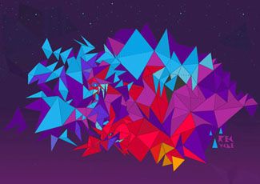
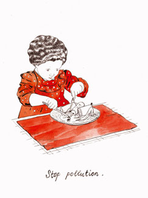
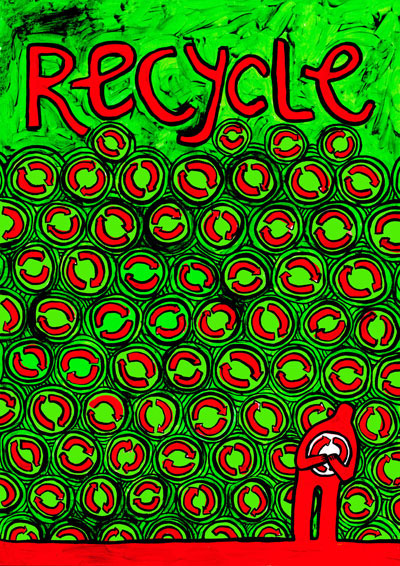
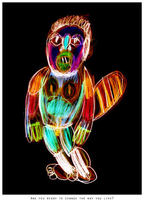
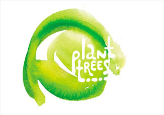

ДОМ 2
«Экопера»
25-го октября в клубе ДОМоткроется выставка под названием «Экопера». Придумал ее Федор Сумкин, известный не только читателям моей колонки, — амстердамский (на открытие не приедет) иллюстратор московских журналов. Всесторонне исследовав иллюстраторское влияние на умы, он предложил участникам на выбор две дюжины простых мыслей о том, как нам обустроить мир — и остальное благоразумно оставил им на откуп (чем те не замедлили воспользоваться).
Сергей Болотин

Это, конечно, большой вопрос, стоит ли иллюстратору связываться с насущными проблемами человечества. Хотя само слово «иллюстратор» в известной степени подразумевает сочуственное обслуживание некой чужой истории, иллюстратор должен бы оставаться художником (с большой буквы), и высокое свое призвание не запятанть сиюиминутным (кто его разберет, на сколько хватит этого глобального потепления).
Вдобавок многие потенциальные зрители, вне зависимости от своего отношения к собственно теме разговора, услышав об очередном иллюстраторском общаке на экологическую тему (отметим в скобках, что на экологическую тему этот, собственно, первый в наших краях), поторопятся отойти подальше, чтобы не наткнуться, неровен час, на фанатичного защитника тропических лесов или, еще хуже, на партийную заказуху.).
Маша Краснова-Шабаева

К счастью, «Экопера» отличается от родственных проектов тем, что не давит на гражданскую совесть и вдобавок принципиально избегает традиционных изошуток a la (при всем уважении) «Польский плакат». Она действует исподволь, ненавязчиво, через зрительный нерв. Кто-то, возможно, скажет, что таким образом заметных результатов не добиться — ну так что ж. Если красоте в этот раз снова не удастся спасти мир, то, по крайней мере, пусть в нем станет побольше красоты.
Аня Всесвятская

В проекте приняло участие несколько десятков художников из разных стран. Большую часть имен мы с вами услышим впервые, и это отдельный повод заглянуть на огонек.
Дмитрий Герасимов

Не бойтесь, зрители. Приходите.
Анастасия Бельтюкова
